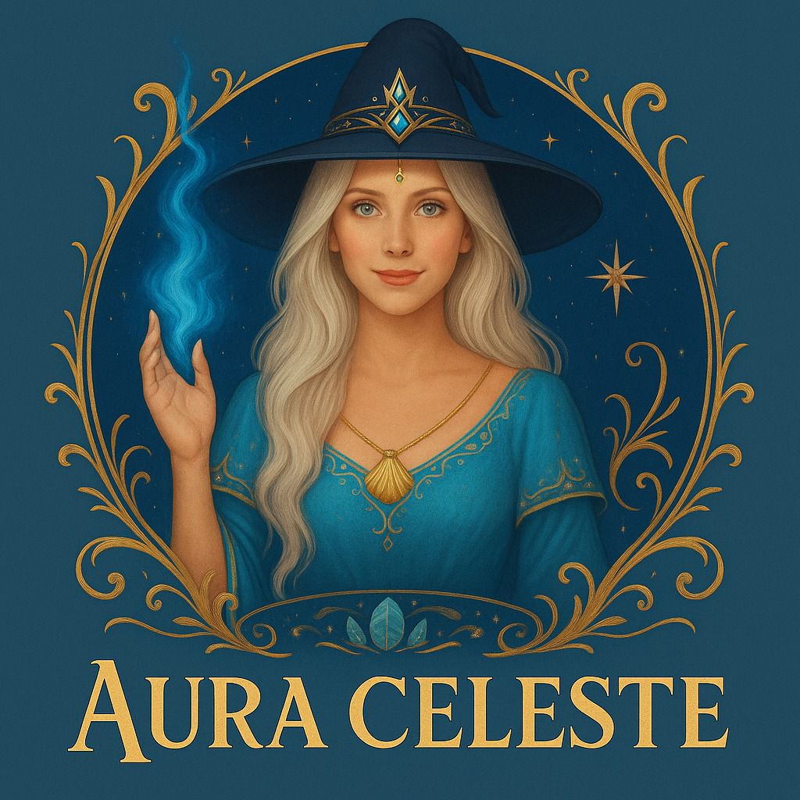
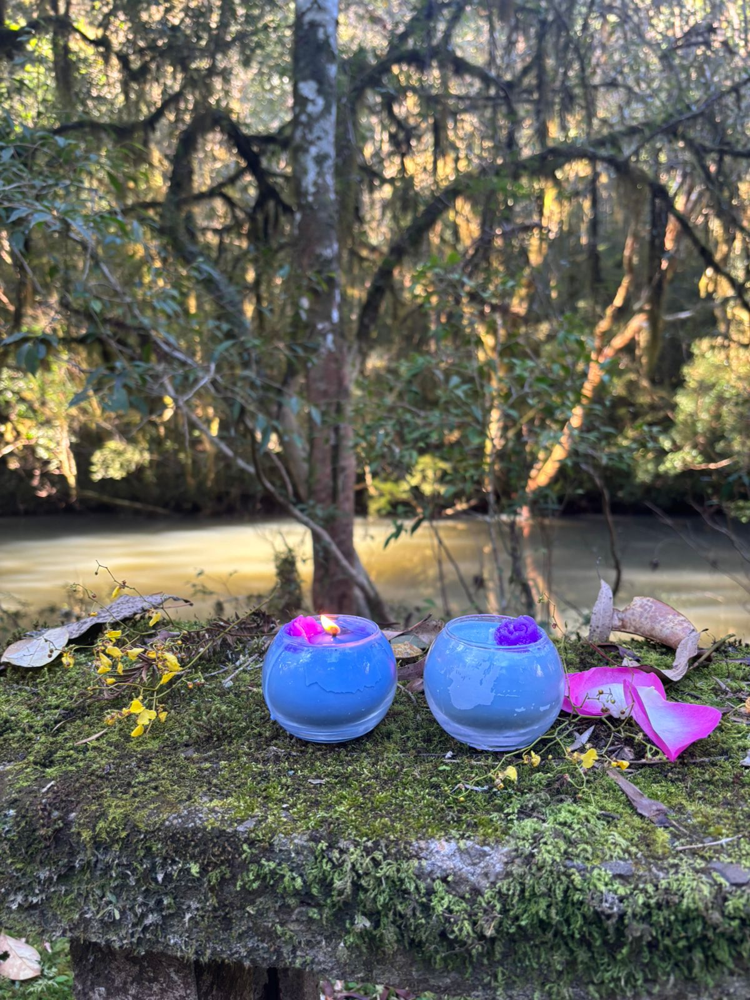
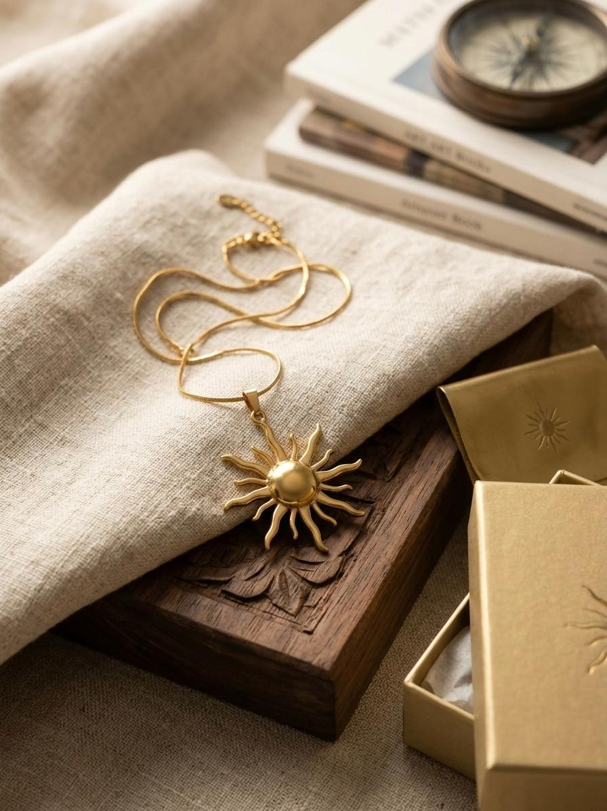
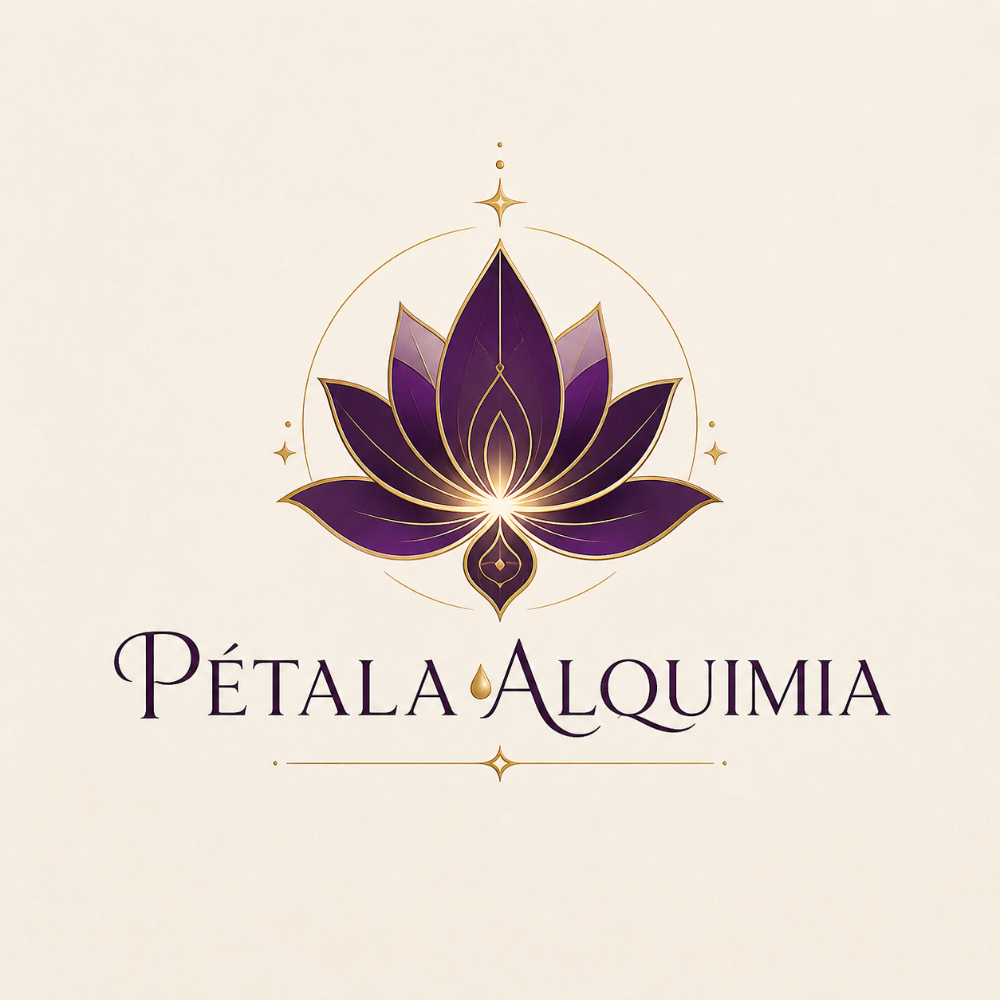
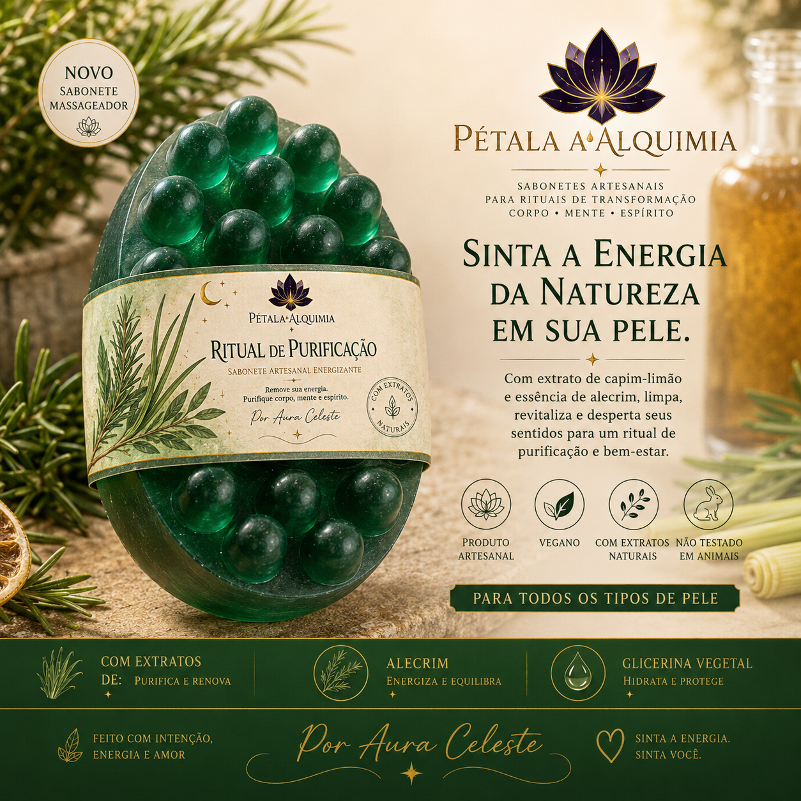
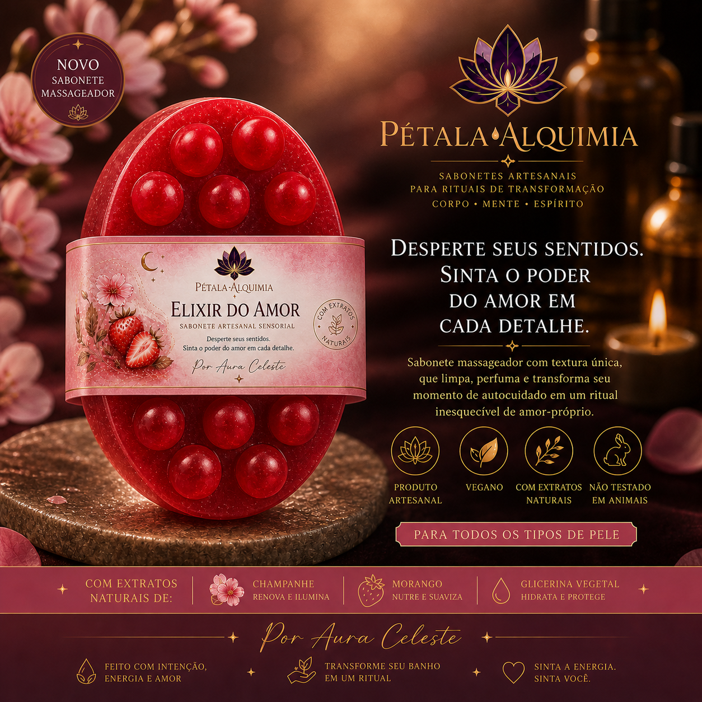

Velas, Amuletos e Sabonetes Alquímicos — Uma jornada completa de conexão, proteção e bem-estar holístico.

Tranquilidade, proteção e expansão espiritual. Base equilibradora para meditações e conexões profundas.
Clareza mental e purificação. Eleva o campo energético com leveza etérea e sensibilidade aguçada.
Amor-próprio e magnetismo feminino. Aterra o blend com doçura acolhedora, sem enjoar — apenas envolver.
Um amuleto que carrega a força do sol — símbolo de vida, proteção e renascimento.
Este colar não é apenas um acessório, é um escudo energético. Sua forma solar atua como um campo de luz que bloqueia e neutraliza energias densas antes mesmo que elas possam te atingir. Tudo aquilo que é enviado com intenção negativa encontra aqui um ponto de corte, de transmutação, de fim.
Ele dissolve bloqueios, rompe demandas e restaura o fluxo natural da sua energia, trazendo leveza para o seu caminho.
Assim como o sol ilumina e aquece, este amuleto desperta a sua vitalidade, fortalece sua presença e reativa a sua força interior. É proteção que não pesa — é luz que envolve, guia e fortalece.
Um símbolo de poder, de energia elevada e de conexão com a sua essência mais luminosa.
Porque quem carrega luz, não teme a escuridão.
Quero meu Amuleto Solar

A Pétala Alquimia nasce da união entre natureza, intenção e sensibilidade. Mais do que uma marca, é uma experiência — um convite para desacelerar, se reconectar e transformar o autocuidado em um verdadeiro ritual de presença.

Um convite à renovação. Com notas frescas de capim-limão e alecrim, essa versão traz uma experiência energizante e purificadora. Ideal para quem busca leveza, clareza mental e revitalização.

Um mergulho no sentir. Com uma combinação envolvente de morango e champanhe, essa versão proporciona uma experiência sensorial delicada, sofisticada e acolhedora.
Cada sabonete é criado artesanalmente, com atenção aos detalhes, energia e propósito. A base glicerinada vegetal, aliada a extratos naturais cuidadosamente selecionados, resulta em produtos que não apenas limpam, mas também despertam sensações, emoções e equilíbrio interior.
"Pétala Alquimia não é apenas um produto. É um ritual. É presença. É transformação."
Por Aura Celeste
Descubra o Ritual no InstagramDas velas moldadas à mão aos sabonetes criados em pequenos lotes, cada item carrega a energia e a intenção da Aura Celeste.
Ingredientes botânicos, extratos puros e bases vegetais. Um compromisso com a sua pele, sua alma e o planeta.
Seja através do escudo de luz do Amuleto Solar ou do banho que transmuta energias, oferecemos ferramentas de poder e cuidado.
Aromaterapia e rituais sensoriais desenhados para equilibrar corpo, mente e espírito em um momento único de presença.
O que dizem aqueles que já vivenciaram o toque da Aura Celeste.
Acender uma vela Aura Celeste é como abrir um espaço sagrado dentro de casa — onde a alma respira.
— Clara, cliente desde 2024O Amuleto Solar me trouxe uma sensação de proteção indescritível. Sinto minha energia muito mais leve no dia a dia.
— Mariana S.O sabonete Ritual de Purificação transformou meu banho. O aroma de capim-limão é revigorante e a pele fica incrível.
— Beatriz L.Presenteei minha mãe com o Elixir do Amor e ela ficou encantada com o cuidado e a energia que o produto transmite.
— Ricardo M.Esclareça suas dúvidas sobre nossos rituais e produtos.
✨ 128 almas encontraram seu momento hoje.
Uma vela. Um momento. Uma transformação.
Adquira agora